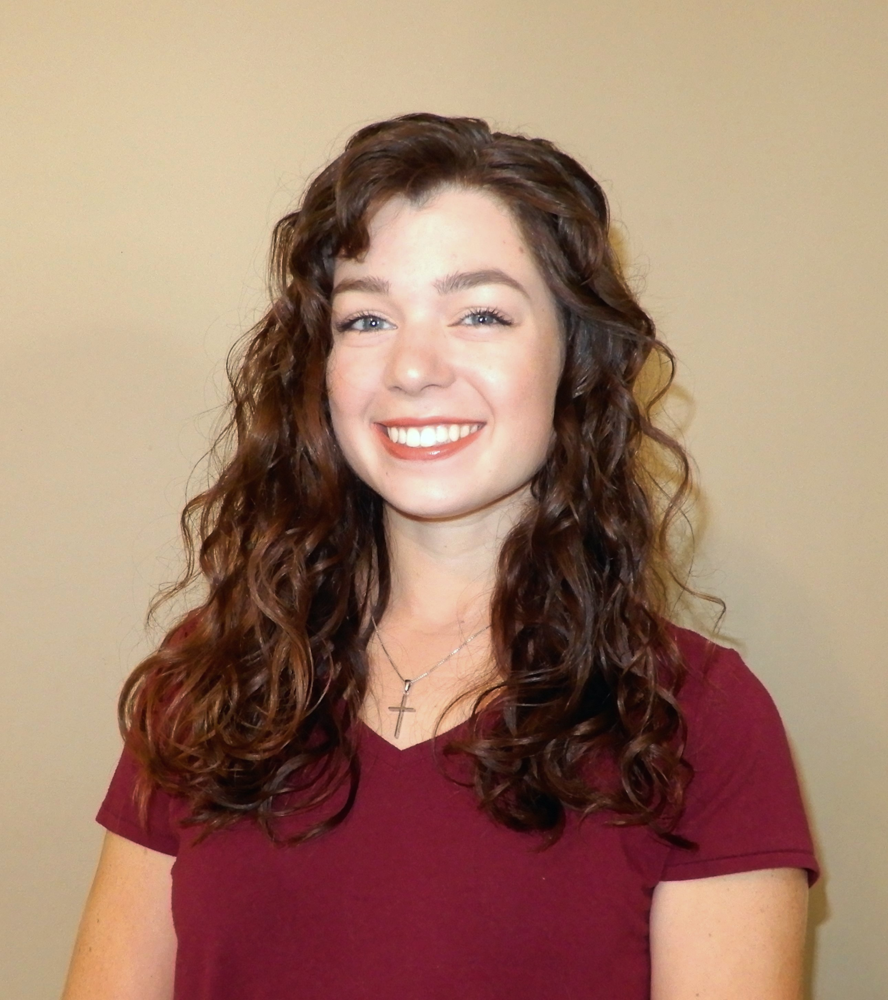

- University of South Carolina, Columbia, SC
Doctor of Philosophy in Mathematics
Concentration: Applied and Computational Mathematics
- Millersville University of Pennsylvania, Millersville, PA
Bachelor of Science in Mathematics
Minors: Computer Science, Spanish Culture
- Graduate
- Analysis I & II, Applied Mathematics I & II, Variational Methods for PDEs and Model Reduction, Quantum Information
- Undergraduate
- Partial Differential Equations, Complex Analysis, Mathematical Modeling, Numerical Analysis, Abstract Algebra, Linear Algebra, Computer Architecture, Data Structures
- Microsoft Word, Microsoft Excel, LaTeX, Mathematica, Maple, Java, C++, HTML, MATLAB, FORTRAN, Zoom, BlackBoard Collaborate, ArcGIS
Millersville University Mathematics Departmental Honors Thesis, Millersille, PA
Advisor: Dr. Baoling Ma
November 2019
- Built mathematical and statistical models to analyze population growth
- Gained experience with interdiciplinary research by studying the life cycle of the bald eagle
- Performed a demographic analysis, including sensitivity analysis, on the bald eagle population
[AM]^2 Research Experience for Undergraduates, Arizona State University, Tempe, AZ
Advisor: Dr. Mohamed Moustaoui
May - July 2019
- Member of 3-student team tasked with studying the impact of the polar vortex on depleted ozone regions
- Modified the Model for Prediction Across Scales (MPAS) to include initioal conditions for ozone and raised the top boundary to 40km
- Developed a high resolution Lagrangian transport model using geodesic coordinate transformations on a rotated sphere
- Mathematical Association of America: Eastern Pennsylvania and Delaware Section Conference
- DeSales University, Lehigh County, PA
- November 2019
- Pennsylvania State System of HIgher Education Student STEM Conference
- Kutztown University, Kutztown, PA
- November 2019
- Millersville University and Franklin and Marshall College Joint Colloquium
- Millersville University, Millersvill, PA
- November 2019
- [AM]^2 REU Final Presentation
- Arizona State University, Tempe, AZ
- July 2019
- University of South Carolina, Columbia, SC
Graduate Instructional Assistant- Lead recitation and lab classes for roughly 30 students in Calculus I & II
- Graded quizzes, created assignments, developed lesson plans
- Worked closely with lead lecturer to convey information clearly and accurately
- Millersville University Mathematics Assistance Center, Millersville, PA Mathematics Tutor
- Provided Clear answers to questions presented by walk-in students
- Assisted with subjects ranging from basic math through multivariable calculus
- Helped develop student's understanding of diffucult mathematical concepts both individually and in groups
- Online Private Mathematics Tutor
- Designed lesson plans and examples for student in AP Calculus and Differential Equations
- Created and administered exams for student in Differential Equations
- Millersville University, Millersville, PA
-
Ropes Course Lead Facilitator
______________________________________._______.____ Aug 2018 - Nov 2019 -
Campus Recreation Leadership Skills Program, Levels 1, 2 & 3
_____________._..________ Jan 2018 - May 2019 -
Captain, Millersville Equestrian Team
_____________________________________.______ Aug 2017 - May 2019
- Associations for Women in Mathematics
- Mathematical Association of America
- The National Society of Leadership and Success
- National Society of Collegiate Scholars